Day 3
Argentina v Saudi Arabia
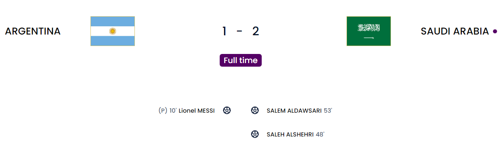
Well. First of all massive kudos to Saudi Arabia. Their system was absolutely solid with a high line to catch the Argentina attack out regularly. Argentina actually scored 3 offside goals. They just couldn’t get the runners in behind well enough. First, a soft penalty was given when Paredes was pulled down in the box during a corner. Fairly soft but VAR thought otherwise and Messi calmly slotted home. Later in the first half alone, it was more like Argentina had the chances but was offside most of the time. Messi was well-marked. Lautaro Martinez scored the second but it was disallowed by offside(I don’t understand the new rules where the whole player has to stay on the shoulder of the last defender unlike the leg of the player). Then a shock happened in the second half when Argentina was slow and Saudi capitalized by scoring from Al-Dawsari. Romero was at fault a little bit for over-committing too early. Then a moment of quality from Al-Shehri gave them the lead. After that, it was aggressive cutting out of the ball and parking the bus massively. They just couldn’t get close. Bringing on Martinez, Fernandez and Alvarez made me think that they could have started. The aggression from Martinez, the incisive passes from Fernandez and the pace and running from Alvarez. Credit to the Saudi goalie as well who made 5 saves including a point-blank one from Tagliafico.
Argentina
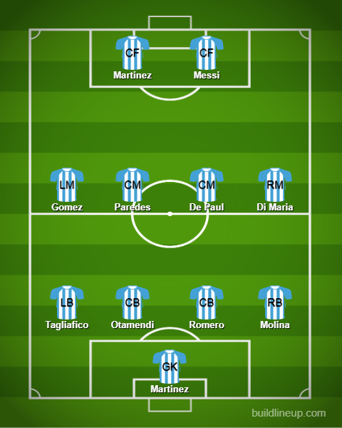
Saudi Arabia
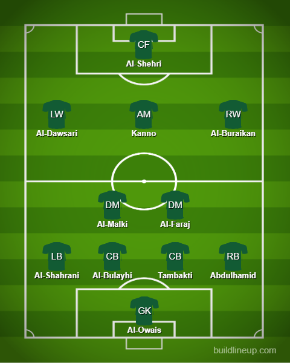
Denmark v Tunisia
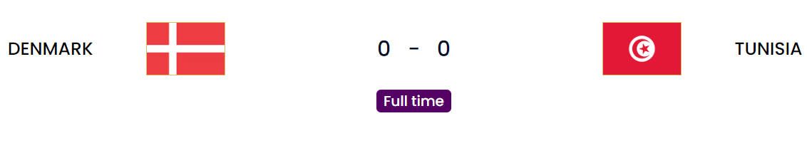
A very dramatic goalless draw honestly. I was backing Denmark but they had a hard time breaking Tunisia. In fact, Tunisia was the one putting the first few attacks with the first being an aggressive tackle on Eriksen(Ease up man. He just came back to a major tournament after the Euros). The first goal was scored by Tunisia but was struck out via offside. Later on a cracking save from Kasper Schmeichel kept out the same person again in a half one v one situation. Denmark managed to have a bit of intent moving deeper into the game with the golden chance arriving for Cornelius who managed to get his attempt blocked at the goal mouth. Another goal was ruled out to offside sadly because Damsgaard was well offside. Later on, there was penalty drama for Denmark but VAR, however, didn’t give it as well which I would agree with because it seemed kind of soft. Both keepers had one brilliant moment you could say among a few routine saves. From the players I know, I think Mejbri looked alright for a few minutes.
Denmark
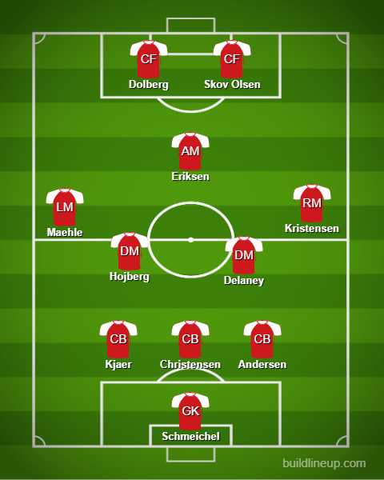
Tunisia
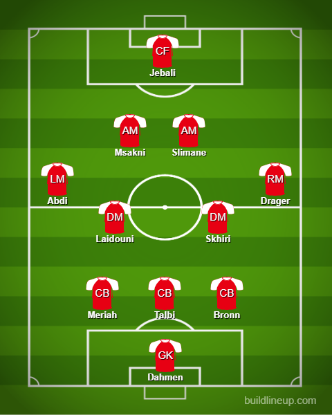
Mexico v Poland
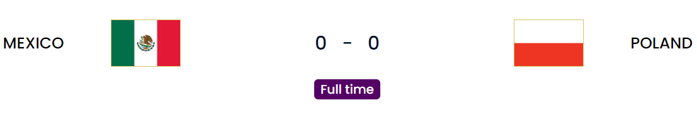
Lewandowski blunted. Ochoa has arrived. Don’t sleep on Mexico. Honestly, this game was pretty dull because of the lack of clear-cut chances compared to the previous game. Only the penalty was the main talking point which I will come to in time. Mexico were seriously threatening with the likes of Lozano and Vega constantly switching sides. I think Jimenez could have made a difference instead of Martin because it seemed like they didn’t have that presence in the box at times to fire to. The major incident came later on when Poland won a penalty via Lewandowski which was given after a VAR check. Step up Lewandowski who had put away all of the penalties before this. But he has never met Ochoa who managed to save it on his left. I didn’t notice his trademark stutter before hitting the ball which was weird. Anyways this draw means Saudi Arabia leads the bloody group after one game and Argentina are at the bottom(I am pretty sure almost everyone thought that table would be upside down after one game)
Mexico
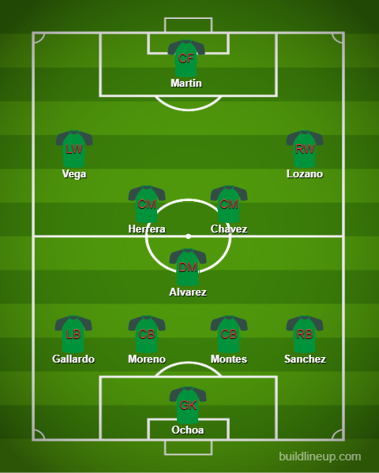
Poland
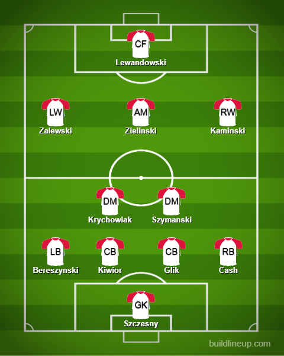
France v Australia
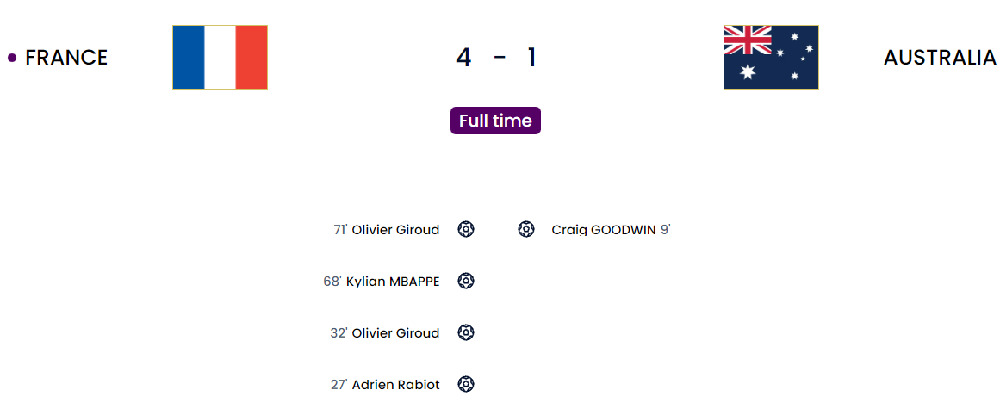
You cannot keep them down. Maybe things may start to look up because for the first time the defending champions of the WC have actually won their opening game with the previous 3 being losses for Italy, Spain and Germany. The first one. My god did a lot of things happen. First of all, why did he pick Lucas Hernandez to play at LB when he had a capable Theo Hernandez for that? He got beat and injured in the build-up and a great cross was bundled home by Goodwin who was hardly marked. Later on, the equalizer came from Theo(Absolutely shocked /s) to Rabiot who headed home properly. The second was just sad. I don’t understand why you have to make a show of playing out from the back against the defending champs who pressed well and got it via Rabiot who squared it for Giroud who couldn’t miss it and made it 50 for France. Mbappe missed a sitter from a great Griezmann cross which was inch perfect from them every time. One person almost got it to 2-2 for Australia but it hit the post before the end of the first half. Dembele gave another cross to Mbappe who scored a good header to make it 3. Then it was a peach of a cross from Mbappe to Giroud who made it 4 to seal the game out. This means that Giroud has leveled Theirry Henry’s goal tally for France. A great achievement.
France
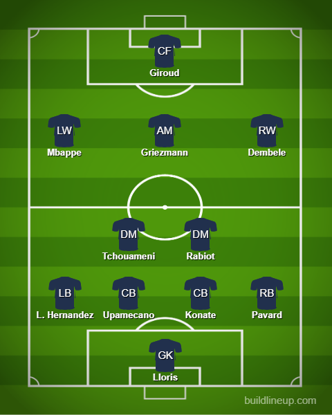
Australia
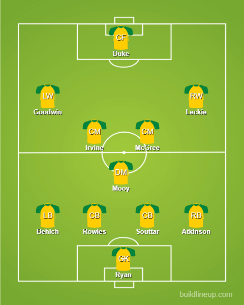